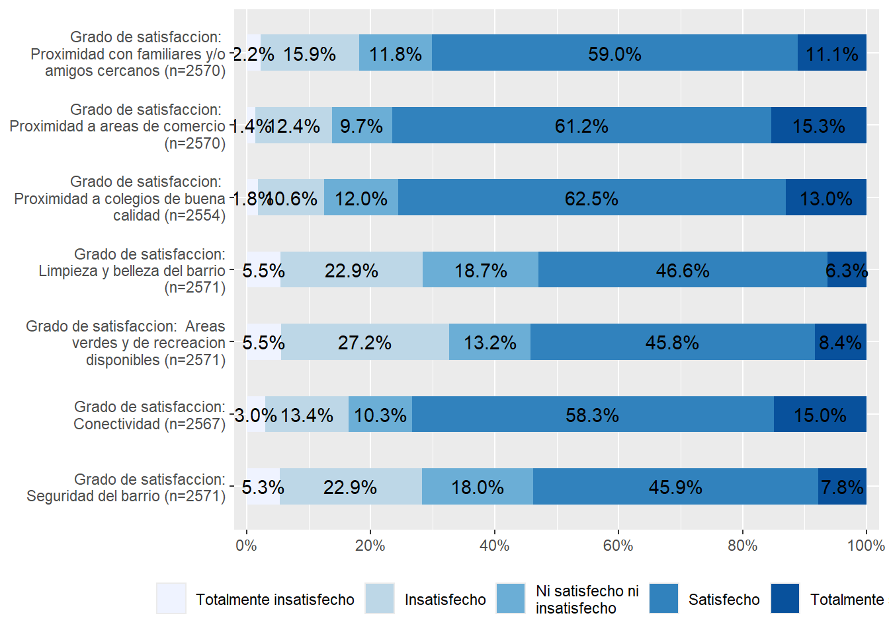

pacman::p_load(sjlabelled,
dplyr, #Manipulacion de datos
stargazer, #Tablas
sjmisc, # Tablas
summarytools, # Tablas
kableExtra, #Tablas
sjPlot, #Tablas y gráficos
corrplot, # Correlaciones
sessioninfo, # Información de la sesión de trabajo
ggplot2) # Para la mayoría de los gráficosTrabajo1
1. Introducción
La rapida expansión del mercado inmobiliario experimentada en los ultimos años en America Latina a significado un creciente reinteres por el estudio de este fenomeno desde la perspectiva de la sociología urbana y es que “Los estudios urbanos en America Latina, o más bien el interes de las ciencias sociales por la ciudad y mas especificamente por los procesos de urbanización, nacio en el marco de la sociología de la modernización y del desarrollo” (Duhau, 2013).
Dicho elemento a llevado a enfoncarse en lo que serian el estudio de este fenomeno poniendo especial atencion en los elementos referidos al acceso al hogar y las consecuensias que este tendria en ambito de desarrollo y los cambios que este traeria consigo en cuanto a las dinamicas sociales y las problematicas resultantes una vez inmerso en este.
Para el casi chileno la ausencia de planos reguladores en multiples comunas de las que compondria su capital ha significo la proliferación de multiples edificaciones y por ende un aumento en la oferta inmobiliaria que deberia facilitar la obtención o compra de una vivienda, pero resulto en tener consecuencias en los dos aspectos anteriormente mencionados.
En el primer sentido tenemos el conocido caso de los denominados como “ghettos verticales” mientras que por otro lado estaria la denominada como “crisis de especulación inmobiliaria”.
Es en base a lo anterior que multiples estudios publicados al respecto han abordando el tema desde ya la problematica en si y enfocandose en cuestiones como las perspectivas de los participes por via de sus percepciones o el enfoques asociado a el analisis del mercado mismo pero ya una vez inmerso dentro de lo que seria las dinamicas de este; aquello terminaria por obviar la noción del porque los actores quisieran ser parte de dicho mercado desde un princio
1.1 Determinantes de la satisfación residencial en Chile
Es asi que el presente trabajo plantea explorar que elementos resultan incentivos para participar de lo que seria el mercado inmobiliario.
Es asi que para aquello nos servimos del concepto de satisfacción residencial entendio como el grado de conformismo que se presenta con la vivienda y que creemos seria el motivante para permanecer en dicho dicho hogar; ser el causante del abandono del mismo; o el motivante de la busqueda de uno que cumpla con aquellas perspectivas.
Para realizar aquello nos basaremos en el estudio de “Los determinantes de la satisfacción residencial en México” articulo de Alejandra Martinez y Jorge Ibarra quienes analizarian los determinantes de la satisfacción residencial en Mexico a partir de los resultados de la Encuesta de Satisfacción Residencial 2013.
De este estudio tomaremos sus elementos y concluisiones resumibles en que en cuanto la satisfación residencial, esta dependeria de 4 caracteristicas que tendria que ser cumplidas: 1- fisicas de la construcción; 2- espaciales, funcionales y formales; 3- ambientales y 4- adaptaciones y trasformaciones para aplicarlo al caso chileno.
Para realizar dicho investigación tomaremos como base los datos del Estudio Longitudinal Social de Chile (ELSOC)
2. Procesamiento de datos
2.1. Preparación de los datos
cargamos nuestras librerias
cargamos la base de datos
load(url("https://dataverse.harvard.edu/api/access/datafile/7245118")) #Cargamos la base de datos que en esta caso seria de la ELSOC2.2 Selección de variables
Seleccionamos las variables que representarian las 4 caracteristicas de la satisfacción residencial
ELSOC_Ola6 <- elsoc_long_2016_2022.2 %>% filter(ola==6) %>% # seleccionamos solo los casos de la ola 1
select(percep_evalucacion_barrio = t08,
satis_seguridad = t06_01,
satis_conectividad = t06_02,
satis_areas_verdes = t06_03,
satis_limpieza_barrio = t06_04,
satis_colegio_calidad = t06_06,
satis_area_comercio = t06_07,
satis_cercania_familia = t06_08,
)Tratamos lo NS/NR (-888 y - 999) como NA
ELSOC_Ola6$percep_evalucacion_barrio <- car::recode(ELSOC_Ola6$satis_seguridad, "c(-999,-888)=NA")
ELSOC_Ola6$satis_seguridad <- car::recode(ELSOC_Ola6$satis_seguridad, "c(-999,-888)=NA")
ELSOC_Ola6$satis_conectividad <- car::recode(ELSOC_Ola6$satis_conectividad, "c(-999,-888)=NA")
ELSOC_Ola6$satis_areas_verdes <- car::recode(ELSOC_Ola6$satis_areas_verdes , "c(-999,-888)=NA")
ELSOC_Ola6$satis_limpieza_barrio <- car::recode(ELSOC_Ola6$satis_limpieza_barrio, "c(-999,-888)=NA")
ELSOC_Ola6$satis_colegio_calidad <- car::recode(ELSOC_Ola6$satis_colegio_calidad, "c(-999,-888)=NA")
ELSOC_Ola6$satis_area_comercio <- car::recode(ELSOC_Ola6$satis_area_comercio, "c(-999,-888)=NA")
ELSOC_Ola6$satis_cercania_familia <- car::recode(ELSOC_Ola6$satis_cercania_familia, "c(-999,-888)=NA")Le asigmanos las etiquetas de respuesta a cada una de las variables
ELSOC_Ola6$satis_seguridad <- set_labels(ELSOC_Ola6$satis_seguridad,
labels=c( "Totalmente insatisfecho"=1,
"Insatisfecho"=2,
"Ni satisfecho ni insatisfecho"=3,
"Satisfecho"=4,
"Totalmente satisfecho"=5))
ELSOC_Ola6$satis_conectividad <- set_labels(ELSOC_Ola6$satis_conectividad,
labels=c( "Totalmente insatisfecho"=1,
"Insatisfecho"=2,
"Ni satisfecho ni insatisfecho"=3,
"Satisfecho"=4,
"Totalmente satisfecho"=5))
ELSOC_Ola6$satis_areas_verdes <- set_labels(ELSOC_Ola6$satis_areas_verdes,
labels=c( "Totalmente insatisfecho"=1,
"Insatisfecho"=2,
"Ni satisfecho ni insatisfecho"=3,
"Satisfecho"=4,
"Totalmente satisfecho"=5))
ELSOC_Ola6$satis_limpieza_barrio <- set_labels(ELSOC_Ola6$satis_limpieza_barrio,
labels=c( "Totalmente insatisfecho"=1,
"Insatisfecho"=2,
"Ni satisfecho ni insatisfecho"=3,
"Satisfecho"=4,
"Totalmente satisfecho"=5))
ELSOC_Ola6$satis_colegio_calidad <- set_labels(ELSOC_Ola6$satis_colegio_calidad,
labels=c( "Totalmente insatisfecho"=1,
"Insatisfecho"=2,
"Ni satisfecho ni insatisfecho"=3,
"Satisfecho"=4,
"Totalmente satisfecho"=5))
ELSOC_Ola6$satis_area_comercio <- set_labels(ELSOC_Ola6$satis_area_comercio,
labels=c( "Totalmente insatisfecho"=1,
"Insatisfecho"=2,
"Ni satisfecho ni insatisfecho"=3,
"Satisfecho"=4,
"Totalmente satisfecho"=5))
ELSOC_Ola6$satis_cercania_familia <- set_labels(ELSOC_Ola6$satis_cercania_familia,
labels=c( "Totalmente insatisfecho"=1,
"Insatisfecho"=2,
"Ni satisfecho ni insatisfecho"=3,
"Satisfecho"=4,
"Totalmente satisfecho"=5))3. Elaboración de la tabla y grafico
Con lo anterior realizamos una tabla descritiva con sus respectivos estadisticos a cada una de las variables
sjmisc::descr(ELSOC_Ola6,
show = c("label", "mean", "sd", "NA.prc", "n"))%>% # Selecciona estadísticos
kable(.,"markdown") # Esto es para que se vea bien en quarto| var | label | n | NA.prc | mean | sd | |
|---|---|---|---|---|---|---|
| 1 | percep_evalucacion_barrio | Grado de satisfaccion: Seguridad del barrio | 2571 | 5.824176 | 3.279658 | 1.0662721 |
| 8 | satis_seguridad | Grado de satisfaccion: Seguridad del barrio | 2571 | 5.824176 | 3.279658 | 1.0662721 |
| 6 | satis_conectividad | Grado de satisfaccion: Conectividad | 2567 | 5.970696 | 3.688742 | 0.9811760 |
| 3 | satis_areas_verdes | Grado de satisfaccion: Areas verdes y de recreacion disponibles | 2571 | 5.824176 | 3.243485 | 1.1073821 |
| 7 | satis_limpieza_barrio | Grado de satisfaccion: Limpieza y belleza del barrio | 2571 | 5.824176 | 3.253598 | 1.0502277 |
| 5 | satis_colegio_calidad | Grado de satisfaccion: Proximidad a colegios de buena calidad | 2554 | 6.446886 | 3.742365 | 0.8798738 |
| 2 | satis_area_comercio | Grado de satisfaccion: Proximidad a areas de comercio | 2570 | 5.860806 | 3.767704 | 0.9024683 |
| 4 | satis_cercania_familia | Grado de satisfaccion: Proximidad con familiares y/o amigos cercanos | 2570 | 5.860806 | 3.608560 | 0.9552485 |
Por ultimo las visualizamos como un grafico
ELSOC_Ola6 %>% select(satis_seguridad:satis_cercania_familia) %>%
plot_stackfrq() + theme(legend.position="bottom")
4. Analisis preeliminar de los datos
A parir de los resultados tanto de la tabla como del grafico podemos estima de forma preeliminar que los encuestados presentan una amplia satisfacción con que el hogar tenga proximidad con familiares o amigos cercanos; con que este sea cercano a areas de comercio; con que este este cercano a colegios de buena calidad y por ultimo con que este tenga una buena conectividad.
Por el contrario las variables de seguridad del barrio; disponibilidad de areas verde y de recreación y limpieza y bellaza del barrio presentarion resultados mas disimiles.
Es en base a lo anterior que se puede concluir de forma preeliminar que de las 4 caracterisiticas a ser cumplida para la satisfación residencial, relevantes serian la caracteristicas 2- espaciales, funcionales y formales y 4- adaptaciones y trasformaciones al ser que los encuestados presentar una mayor satisfacción en variables que podrian ser categorizadas dentro de dichas caracteristicas.
Por lo que estas determinantes serian las determinantes en el caso Chileno y en caso de ser cumplidas podrian ser la responsables en un sentido general de que el encuestado permanezca en su hogar; en el caso contrario en caso que el encuestado no se sienta satisfecho en con esos aspectos podria abandonar su hogar y por ultimo el hogar que cumpla con dichas determinantes podria ser el hogar que buscaria el encuestado en el supuesto que busque un hogar en el mercado inmobiliario o la razón de que decidiera sumarse a este.
5. Referencias
Duhau, E. (2013). La investigación urbana y las metrópolis latinoamericanas. Ramírez, Velázquez y Emilio Pradilla (comp.) Teoria sobre la ciudad en America Latina. Mexico DF: Universidad Autónoma Metropolitana. https://biblio.flacsoandes.edu.ec/libros/141359-opac.
Martínez Ibarra, Alejandra, & Ibarra Salazar, Jorge. (2017). Los determinantes de la satisfacción residencial en México. Estudios demográficos y urbanos, 32(2), 283-313. https://doi.org/10.24201/edu.v32i2.1635